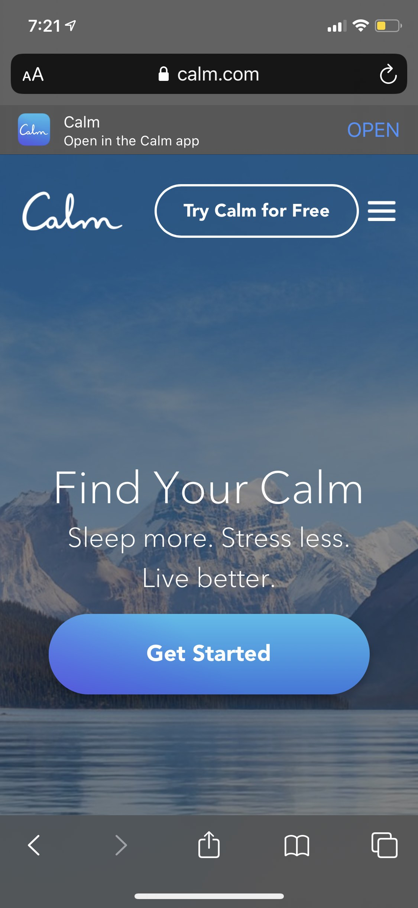
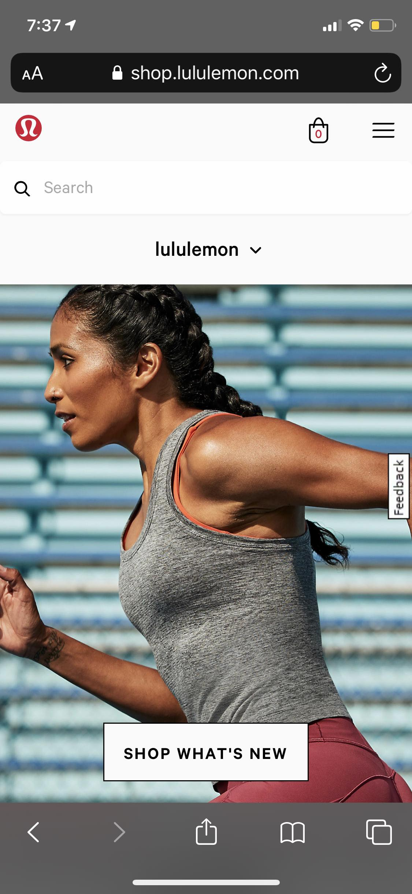

Visual Hierarchy
Calm
Calm.com Visual Hierarchy is the use of color and size to draw attention to important elements. The first thing you notice is the serene background photo. This sends a strong message to users with out words. It is also the largest object on the web page. The secondary focus is the contrasting white text that leads your eye to the smaller text. Lastly, they use the bolded font and bright blue color to create a button. Through size, font and colors you can see how hierarchy is used in design.
Hick's & Fitt's Law
Oliver Jeffers
Oliverjeffers.comHick’s Law says, "That every additional choice increases the time required to make a decision". On Oliver Jeffer's web page you can see how displaying only the navigation gives the user few options. These few options help users to take action quickly. This site also uses Fitt's Law, which says ,"The larger and closer and object is, the easier it is to use". Making a simple, large navigation bar creates a nice actionable page for all users.
White Space & Clean Design
Lululemon
Lululemon.com Simpliciy and White space are used on this site to create function and impact. The header, the search bar and the drop down menu are all white. This might seem like it would be boring. However, It allows many elements to be present and not overwhelming. The scrolling photo creates interest and contrast to the White top third of the page. The elements displayed are minimal and surrounded by white making it easy to understand.